01 · Office tower · 2023
Halden Tower
62 floors, glass and steel, 248 m.
ArchitectureStructural engineeringEst. 1987
Towers, bridges and civic buildings in concrete, steel and glass. Designed and engineered by one team, from the first sketch to the last bolt.
01 — The studio
Architects draw the building. Engineers make it stand. At MONOLITH they sit at the same table, so the structure is the design and nothing is added later to hold it up.
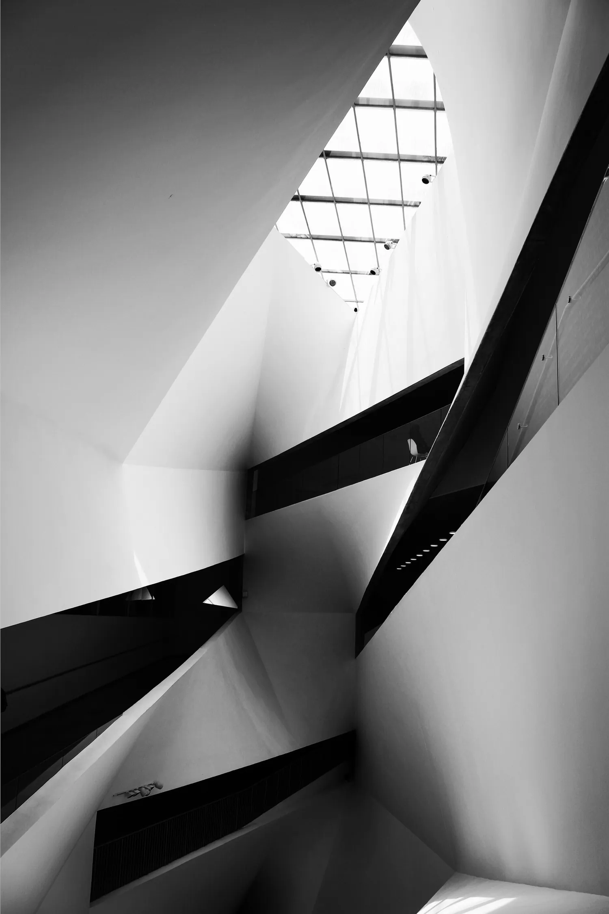
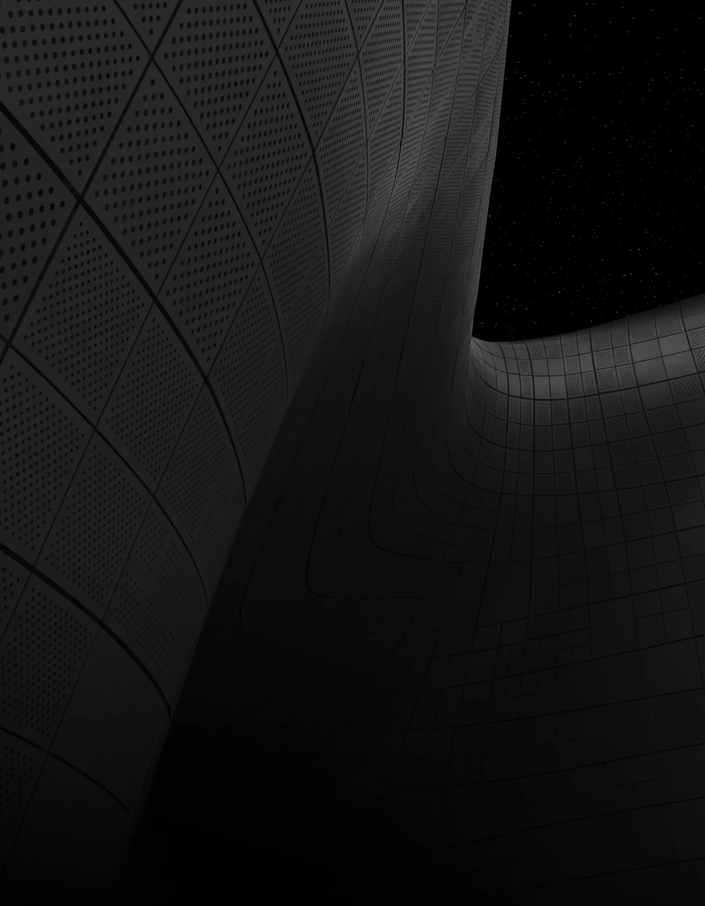
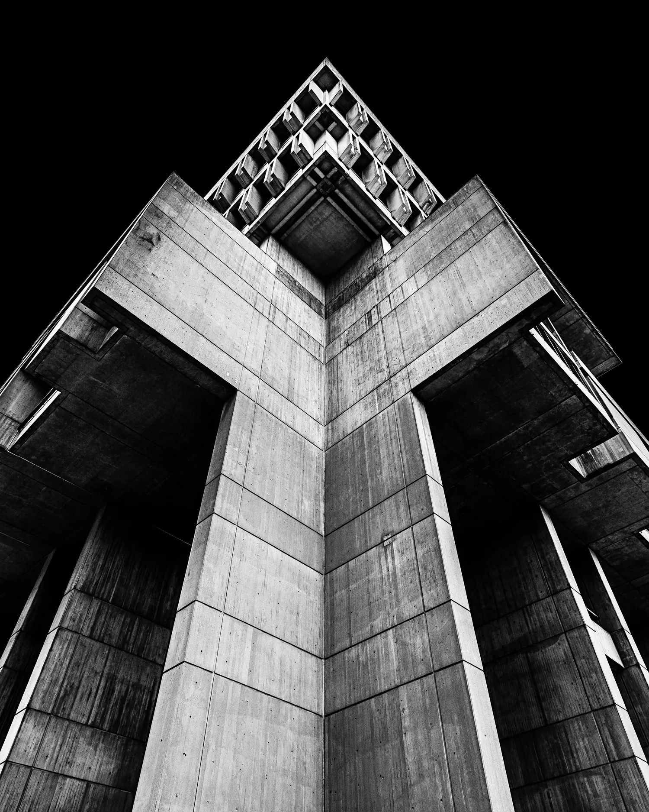
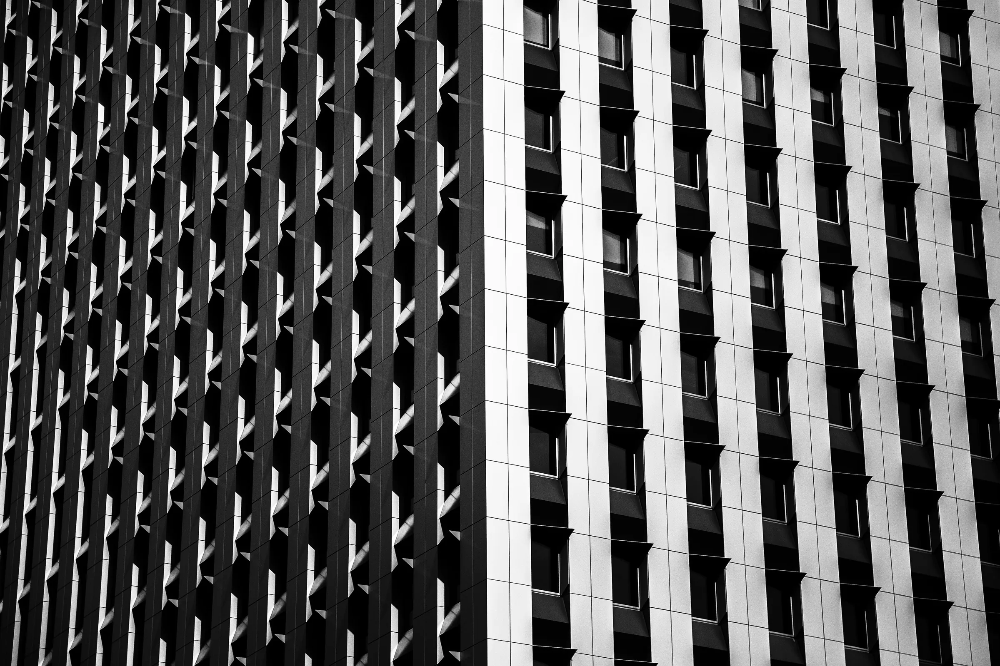
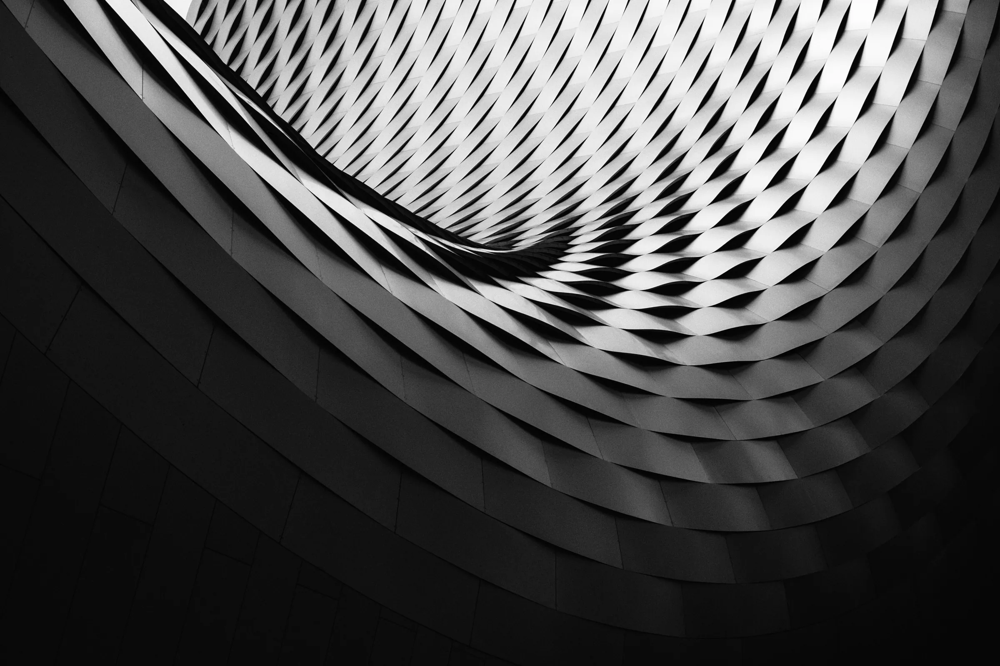
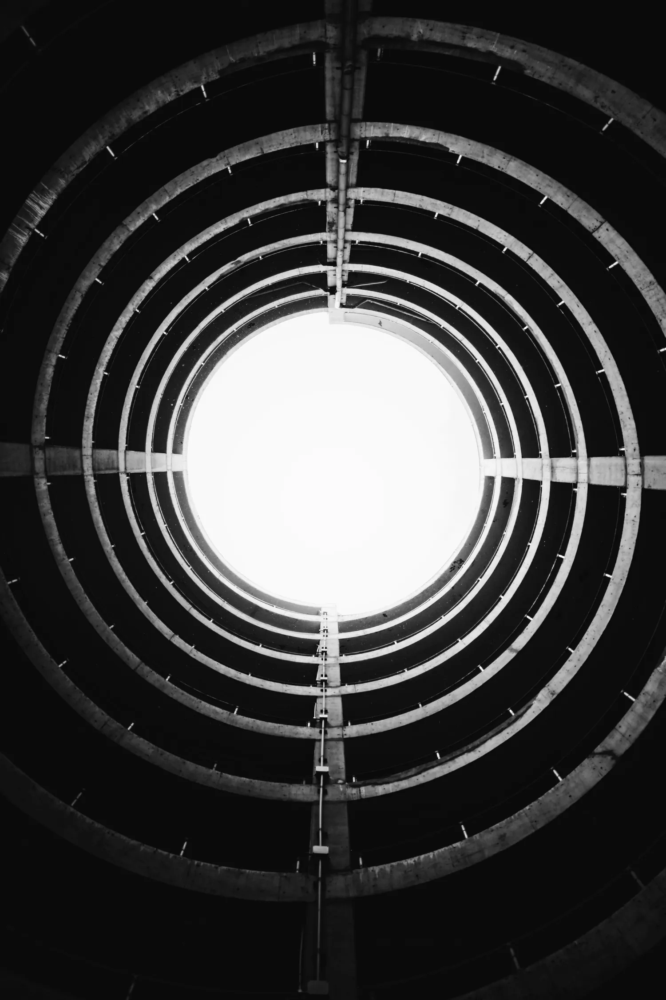
02 — Foundation
Piles go down to bedrock before anything goes up. On our towers that can mean 60 metres of concrete you will never see.
03 — Frame
We design the structure and the skin together. Columns carry the load and set the rhythm of the windows.
04 — Span
Long-span roofs and floors give clients open space. The ribs that carry the weight stay on show.
05 — Crown
A building ends where the daylight comes in. We plan the roof, the core and the skylight from day one.
06 — Selected work
01 / 06
62 floors, glass and steel, 248 m.
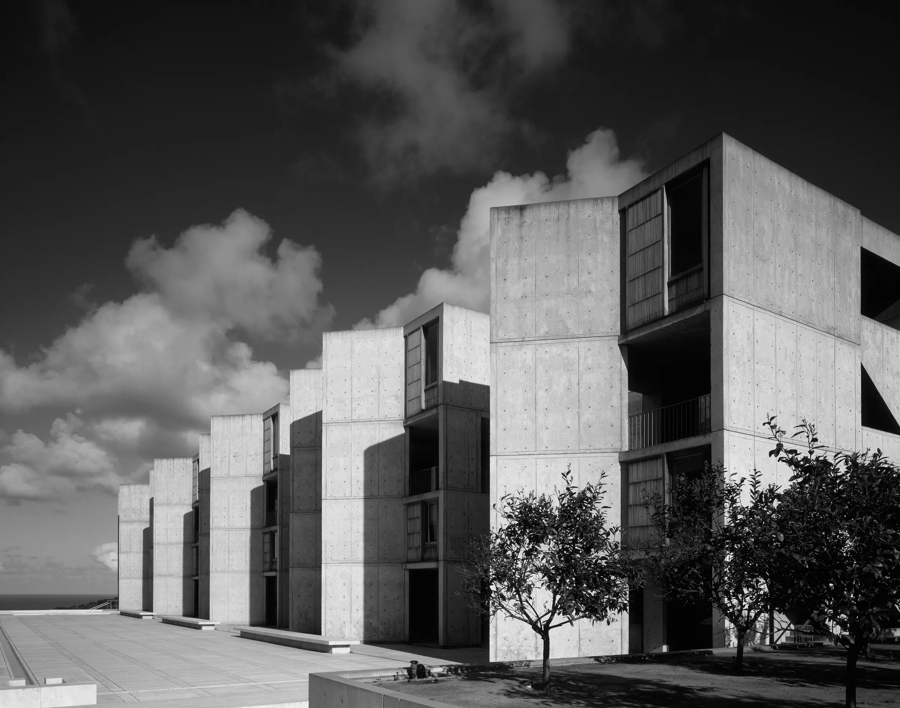
Board-formed concrete, 41,000 m².
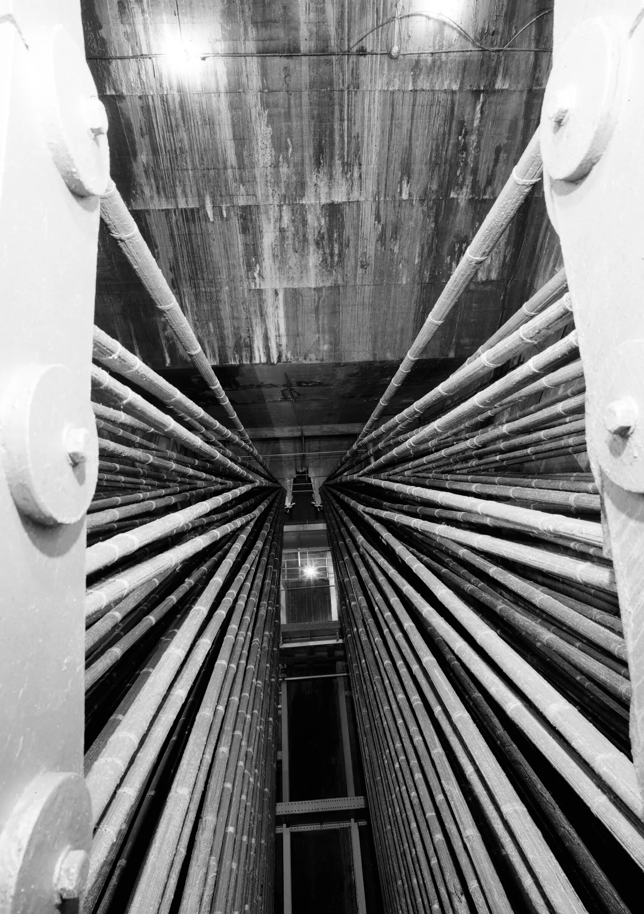
1,100 m main span, 61 cable strands.
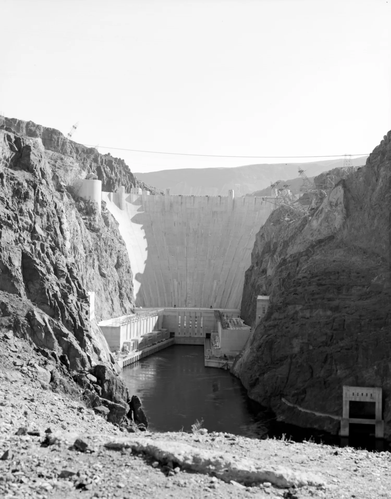
Seismic upgrade, kept in service throughout.
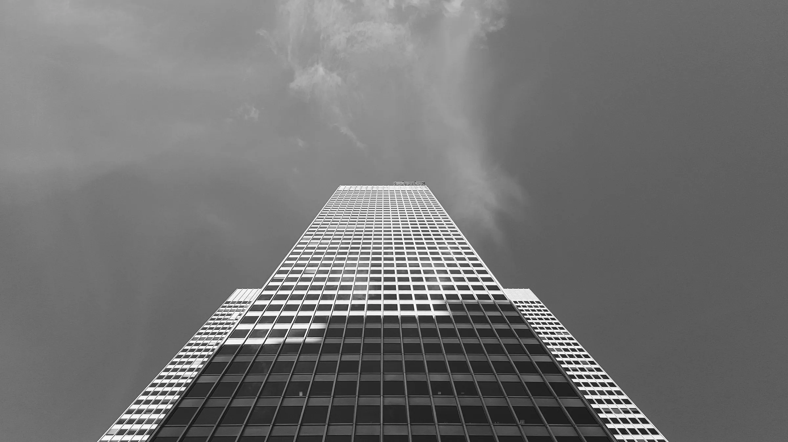
Exposed frame, 38 floors, net-zero operation.
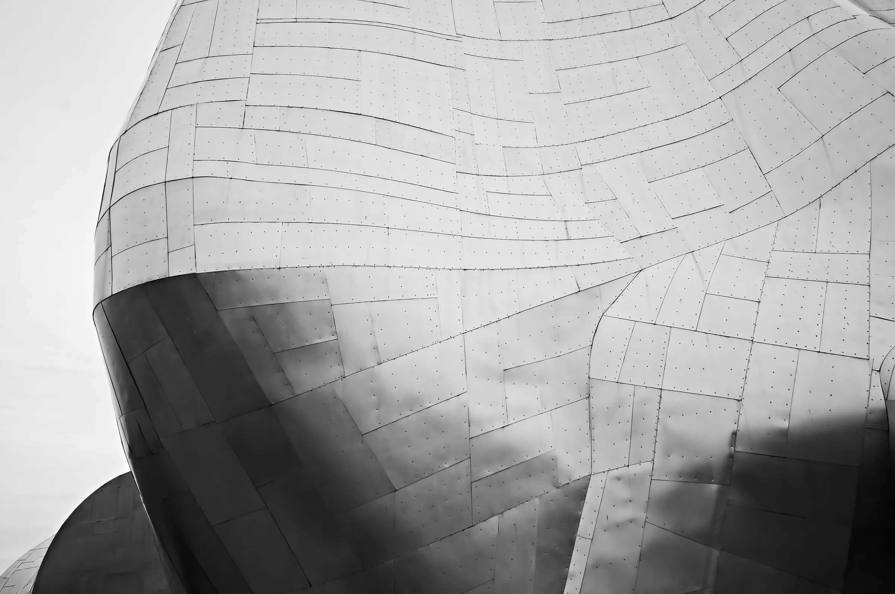
Steel shell roof, 2,200 seats.
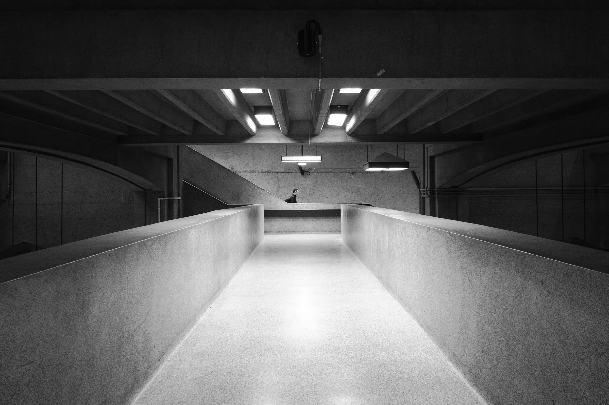
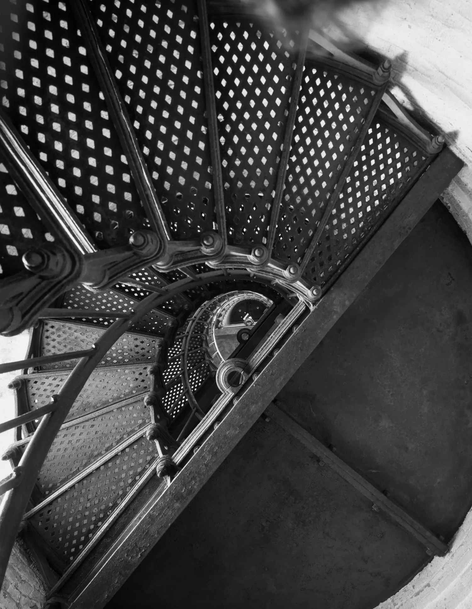
07 — Practice
Massing, planning, facades and interiors.
Frames, foundations, long spans and seismic design.
Suspension, cable-stayed and arch bridges. Dams and tunnels.
Strengthening existing buildings so they can stay in use.
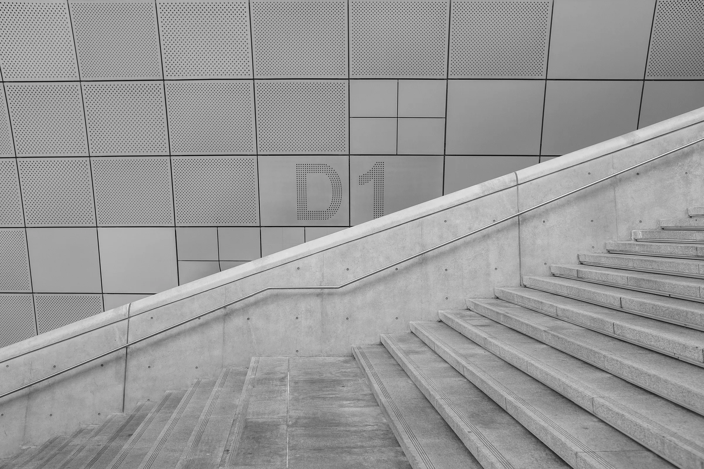
08 — Load test
Every beam we design is tested past its working load. Hold the button to add weight. Let go and it springs back.
09 — Studios
10 — Contact
This is a demo, so nothing was sent.